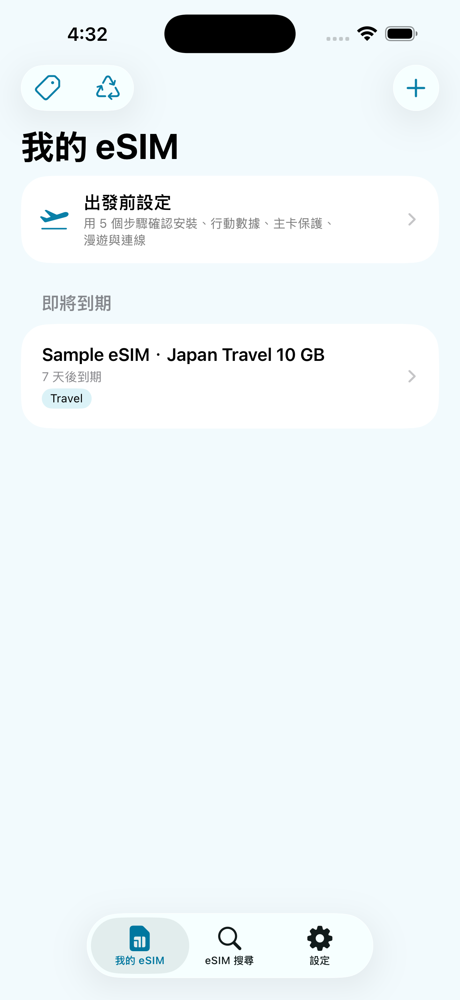

不綁定任何單一 eSIM 品牌。你可以自行比較並選擇符合預算與行程的方案，再用 eSIMManager 集中整理多張卡片、啟用資訊與效期。先完成出發前 3 項確認，抵達後再完成 2 項啟用與連線確認；實際設定、安裝與用量仍以 iOS 與供應商官方資訊為準。

不綁定單一供應商、不設訂閱門檻，協助你把分散的旅遊 eSIM 資訊整理成可安心出發的流程。
無論你從旅遊平台、電信商或其他可信賣場取得 eSIM，都能將可用的啟用資訊整理進 App。方案價格、庫存與服務內容，仍以你選擇的供應商頁面為準。
將 QR Code、LPA 啟用資訊、適用地、效期與備忘收在同一處。資料以裝置本機為主保存；你可依需要備份、分享或標示行程已結束。
App 不設內購或卡片數量上限，並提供安裝引導、出發前確認、效期倒數與裝置端流量估算。iPhone 的行動數據與漫遊設定仍須由你在系統中確認。
以 App 測試版本畫面說明主要操作流程與使用限制。
建立旅遊 eSIM 後，首頁提供出發前設定入口，讓使用者依序確認重要項目。
支援常見 LPA QR Code、圖片、PDF 與完整 LPA 字串匯入；辨識結果取決於憑證格式、文件內容與影像品質。

在啟用資訊完整且裝置支援時，可嘗試開啟 Apple 的系統 eSIM 安裝流程；仍須由使用者在系統畫面確認，安裝結果以 iOS 與供應商為準。

在出國前確認主卡的「數據漫遊」與「允許行動數據切換」皆已關閉，降低高額漫遊費用的風險。
旅程中可直接切換 App 介面語言，也可以選擇跟隨 iPhone 系統語言。

可匯出 JSON 備份並在新裝置匯入卡片紀錄；設定密碼時，備份會以 AES-GCM 加密。

六個步驟帶你完成旅遊 eSIM 的購買、安裝、啟用、用量確認與行程整理。可左右滑動查看每一步；第 4、5 步點選人物手上的手機，可查看真實 App 操作畫面。


可在 App 內切換繁體中文、簡體中文、English、日本語、한국어，或選擇跟隨 iPhone 系統語言。
先依目的地、使用天數與預算比較適合的方案；取得 QR Code 或 LPA 啟用資訊後，再用 eSIMManager 整理與引導設定。以下提供優先推薦賣場與三個旅遊平台的官方素材，實際方案、價格、庫存與是否支援 eSIM，均以各平台頁面為準。
瀏覽 eSIM 與旅遊上網卡方案；下單前請確認目的地、使用天數、啟用方式與商品說明。
以上為外部賣場、平台提供的官方廣告或推薦連結；部分連結可能含推薦／分潤參數，這不會增加你的購買價格。點擊後將離開 eSIMManager 網站，交易、商品與服務均由各賣場或平台依其條款提供。
為保障使用者知情權與對齊系統真實運作機制，特此說明本 App 之技術原理與限制：
本 App 的行動流量統計係透過 Darwin BSD 底層 getifaddrs 介面，讀取本機 pdp_ip* 行動數據通道累計的收發位元組數。這是裝置端網路傳輸量的估算參考：無法辨識實際使用的是哪張 eSIM，其他 SIM 的流量、介面重設、免流量優惠與帳單週期都可能造成差異。估算值在 App 回到前景時更新，並非電信商即時帳單；實際剩餘額度請以電信商官方系統為準。
受限於 Apple iOS 系統安全機制，第三方 App 無法在背景直接靜默安裝 eSIM，也無法替使用者變更行動數據線路。點擊「觸發安裝」僅會嘗試開啟 Apple 的系統 eSIM 安裝流程；是否顯示流程與能否完成安裝，取決於 iOS 版本、裝置、網路、憑證與供應商。使用者仍須在系統畫面手動確認。
eSIMManager 專注於提供純粹、高品質的本機管理工具。我們歡迎電信商、eSIM 發行商、旅遊平台與各界合作夥伴洽談適當的導流、品牌曝光與內容合作。
可洽談標準 LPA QR Code 相容性資訊、品牌曝光與專屬優惠等合作方式。
旅遊平台導流、聯合品牌推廣活動、多元商務專案提案。
填寫下方表單或直接寄信至官方信箱，我們會在可行範圍內盡快回覆。
LPA:1$ 開頭）。影像品質、供應商格式或受保護 PDF 都可能影響辨識；可改用「手動輸入」貼上供應商提供的完整 LPA 字串，或向供應商索取標準憑證。
立即免費下載 eSIMManager，將每一張旅遊 eSIM 整理成清楚、可安心確認的出發流程。